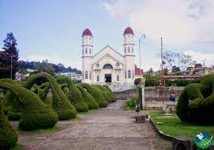

La ciudad de los mangos

Alajuela es un distrito de Costa Rica, a unos 20 km al oeste de la capital, San José. Alajuela es la cabecera del cantón y de la provincia homónima, además de ser parte de la Gran Área Metropolitana. Le corresponde el título de ciudad al ser la sede de la Municipalidad de Alajuela.